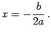
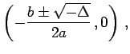
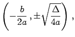
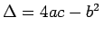

Die zwei Funktionen
liefern für a < 0 eine Ellipse, für a > 0 eine Hyperbel.
Von den zwei Achsen stimmt eine mit der x-Achse überein, die andere ist die Gerade  Die Scheitel A und C liegen bei  die Scheitel B und D bei  wobei  ist.
Definitionsbereich und Verlauf der Funktionen hängen von den Vorzeichen von a und  ab. Für a < 0 und
ab. Für a < 0 und  besitzen die Funktionen nur imaginäre Werte, so daß hier keine Kurven existieren. (Ausführlich s. Ellipse und Hyperbel).
besitzen die Funktionen nur imaginäre Werte, so daß hier keine Kurven existieren. (Ausführlich s. Ellipse und Hyperbel).